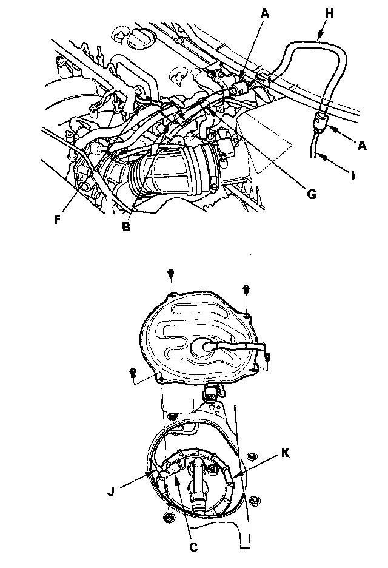
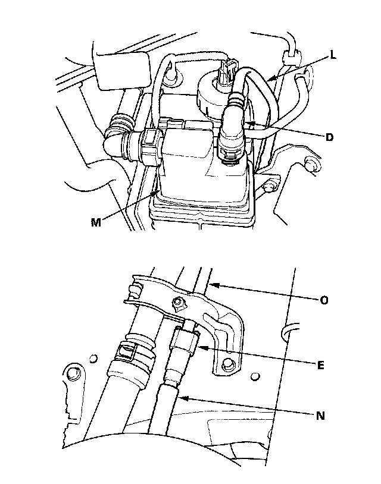
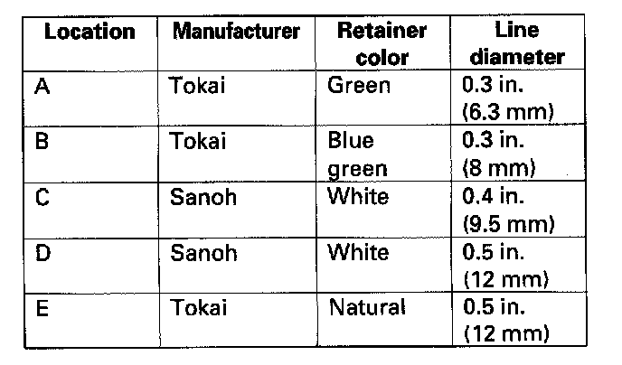

Fuel Line Coupler: Service Precautions
Fuel Line/Quick-Connect Fitting Precautions

The fuel line/quick-connect fittings (A), (B), (C), (D), and (E) connect the fuel rail (F) to the fuel feed hoses (G), fuel feed hose A to fuel feed hose B (H), fuel feed hose B to the fuel line (I), the fuel line (J) to the fuel tank unit (K), the fuel vapor line (L) to the EVAP canister (M) and the fuel tank vapor recirculation tube (N) to the fuel fill pipe (O). When removing or installing the fuel feed hose, the fuel tank unit, or the fuel tank, it is necessary to disconnect or connect the quick-connect fittings. Pay attention to the following:
- The fuel feed hoses, fuel line, and quick-connect fittings are not heat-resistant; be careful not to damage them during welding or other heat-generating procedures.
- The fuel feed hoses, fuel line, and quick-connect fittings are not acid-proof; do not touch them with a shop towel that was used for wiping battery electrolyte. Replace them if they come in contact with electrolyte or something similar.
- When connecting or disconnecting the fuel feed hoses, fuel line, and quick-connect fittings, be careful not to bend or twist them excessively. Replace them if they are damaged.

A disconnected quick-connect fitting can be reconnected, but the retainer on the mating line cannot be reused once it has been removed from the line.
Replace the retainer when:
- replacing the fuel rail.
- replacing the fuel line.
- replacing the fuel pump.
- replacing the fuel filter.
- replacing the fuel gauge sending unit.
- replacing the EVAP purge line.
- replacing the EVAP canister.
- replacing the fuel tank.
- replacing the fuel fill pipe.
- it has been removed from the line.
- it is damaged.